Kabosy: Традиционный четырех-струнный инструмент из Мадагаскара, на котором играют Dama, Rossy и другие. Создает живые, закрученные ритмы.
Kamele ngoni: Небольшая разновидность ngoni, дословно лютня молодого человека. Именно kamele ngoni придает музыке Wassoulou южного Мали те отчетливые, фанковые, басовые линии, которые определяют ее ритм и гармонию.
Калюка: Русский народный инструмент, полая внутри дудка без дополнительных отверстий. Роль свистка выполняет язык, звук извлекается за счет передува.
Kaval: Деревянная продольная флейта, широко распространенная в Балканских странах (Болгарии, Румынии, Молдавии и Албании) и Турции.
Края верхнего конца инструмента заострены,
Kena:
Kempli: Подвешенные к рамкам малые гонги, которые широко используются в небольших gamelan оркестрах. Каждый акцентирует определенный такт музыки.
Khomus/Хомуз: см. vargan.
Khur: Монгольский струнный смычковый инструмент. Две основные разновидности - Morin Khur (скрипка с головой лошади) в Монголии и Khuchir в Китае.
У современного инструмента корпус цилиндрической формы из дерева, две парных шелковых или металлических струны и кожаная дека. Музыка, в основном, имитирует звуки, связанные с лошадьми, - ржание, бег галопом и т.п. При игре khur держат вертикально.
Kna: Большой ритуальный барабан, на котором играют тибетские монахи Shartse. Звук извлекают ударами палки.
Kora: 21-струнная арфа-лютня, на которой играют в Мали, Гамбии, Гвинее и Сенегале. Центральный инструмент традиции Manding.
Исполнителя на kora называют jeli. По традиции, достигнув определенного мастерства, jeli сам делает себе инструмент. Задняя сторона корпуса-резонатора из calabash может одновременно служить для поддержания ритма.
Kpanlogo: Наиболее широко известный колышковый барабан восточной Африки. По форме и звуку очень близок conga, но меньше размером. Голову покрывают кожей антилопы, звук извлекают руками.
Иногда krar также называют Арфой Аполлона.
Kamele ngoni: Небольшая разновидность ngoni, дословно лютня молодого человека. Именно kamele ngoni придает музыке Wassoulou южного Мали те отчетливые, фанковые, басовые линии, которые определяют ее ритм и гармонию.
Калюка: Русский народный инструмент, полая внутри дудка без дополнительных отверстий. Роль свистка выполняет язык, звук извлекается за счет передува.
Kaval: Деревянная продольная флейта, широко распространенная в Балканских странах (Болгарии, Румынии, Молдавии и Албании) и Турции.
Края верхнего конца инструмента заострены,
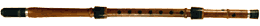
иногда в горлышко вставляют щелеобразующий сердечник, что преобразует кавал во флейту со свистковым устройством, называемую кавал кудоп. В корпусе 6-7 боковых отверстий с одной стороны и одно - с другой. Длинные инструменты часто состоят из трех отдельных частей.Kena:
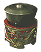
см. quena.Kempli: Подвешенные к рамкам малые гонги, которые широко используются в небольших gamelan оркестрах. Каждый акцентирует определенный такт музыки.
Khomus/Хомуз: см. vargan.
Khur: Монгольский струнный смычковый инструмент. Две основные разновидности - Morin Khur (скрипка с головой лошади) в Монголии и Khuchir в Китае.
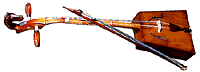
Исторически, голову лошади использовался для корпуса инструмента, кожу в качестве резонатора и гриву для струн и смычка.У современного инструмента корпус цилиндрической формы из дерева, две парных шелковых или металлических струны и кожаная дека. Музыка, в основном, имитирует звуки, связанные с лошадьми, - ржание, бег галопом и т.п. При игре khur держат вертикально.
Kna: Большой ритуальный барабан, на котором играют тибетские монахи Shartse. Звук извлекают ударами палки.
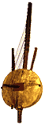
Kora: 21-струнная арфа-лютня, на которой играют в Мали, Гамбии, Гвинее и Сенегале. Центральный инструмент традиции Manding.
Исполнителя на kora называют jeli. По традиции, достигнув определенного мастерства, jeli сам делает себе инструмент. Задняя сторона корпуса-резонатора из calabash может одновременно служить для поддержания ритма.
Kpanlogo: Наиболее широко известный колышковый барабан восточной Африки. По форме и звуку очень близок conga, но меньше размером. Голову покрывают кожей антилопы, звук извлекают руками.
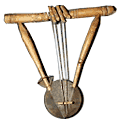
Krar: Старинная эфиопская лира с пятью или шестью животными или нейлоновыми струнами. У инструмента чаше-образный, покрытый козлиной шкурой резонатор, а также большое деревянное ярмо, удерживаемое в нужном месте двумя деревянными ручками.Иногда krar также называют Арфой Аполлона.
Kalimba:
Kantele: Эта цитра хорошо известна уже много веков в финской части Балтийского моря.
Согласно легенде первую kantele сделал герой карельского эпоса Kalevala из черепа большой щуки, протянув как струны длинные волосы, которые дали ему молодые девушки.
Канун: см. qanun.
Исполнитель играет сидя, опирая ножку инструмента о пол или колено. Кеманча используется соло и в ансамбле.
Kesingkesing: На языке Wolof, так называется enhancer/украшатель звука djembe, который прикреплялся к нему веревкой. (На языке Bambara также называется gnagnama.) Название имитирует звучание барабана с таким приспособлением. Состоит из двух или трех металлических пластин, окруженных небольшими кольцами с наружного края, которые установлены на три, девять, и/или двенадцать часов вокруг обода.
Koto (также называемый kin): Традиционный японский струнный щипковый инструмент.
При игре инструмент располагается на полу на подставке, исполнительница сидит рядом. Большим и двумя первыми пальцами правой руки извлекают звук(иногда эбонитовым плектором), левой рукой меняют высоту звука cтрун.
Звук извлекают вдуванием воздуха внутрь трубочек. Играют на кугиклах обычно в ансамбле, сопровождая исполнение отдельными возгласами.
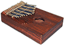
Одна из разновидностей африканского thumb piano, используется в музыке Ямайки. Наиболее часто встречается как аккомпанирующий инструмент в одном из корней reggae, mento. Kalimbas придают неповторимый низкий гул живым басовым ритмам ямайкской музыки.Kantele: Эта цитра хорошо известна уже много веков в финской части Балтийского моря.
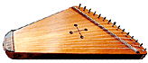
Более ранние и меньшие по размеру kantele имели пять струн из скрученного конского волоса и были настроены на пентахорд. Позже инструмент увеличился в размере и стал содержать до десяти струн, сделанных из металла.Согласно легенде первую kantele сделал герой карельского эпоса Kalevala из черепа большой щуки, протянув как струны длинные волосы, которые дали ему молодые девушки.
Канун: см. qanun.
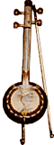
Kemenche(Кеманча, Кяманча): Струнный смычковый инструмент, распространенный на Кавказе и в странах Ближнего и Среднего Востока. Корпус кеманчи круглый, из дерева, иногда из кокосового ореха. Дека из тонкой змеиной, рыбьей кожи или пузыря, шейка из дерева и длинная металлическая ножка. На лукообразный смычок натянут конский волос. Существуют 2х, 3х и 4х струнные инструменты. У некоторых армянских разновидностей кеманчи корпус вытянутый и по форме напоминает виолончель.Исполнитель играет сидя, опирая ножку инструмента о пол или колено. Кеманча используется соло и в ансамбле.
Kesingkesing: На языке Wolof, так называется enhancer/украшатель звука djembe, который прикреплялся к нему веревкой. (На языке Bambara также называется gnagnama.) Название имитирует звучание барабана с таким приспособлением. Состоит из двух или трех металлических пластин, окруженных небольшими кольцами с наружного края, которые установлены на три, девять, и/или двенадцать часов вокруг обода.
Koto (также называемый kin): Традиционный японский струнный щипковый инструмент.
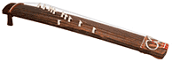
Представляет собой цитру с 13 перемещаемыми ладами. Корпус изготавливается из дерева paulawnia.При игре инструмент располагается на полу на подставке, исполнительница сидит рядом. Большим и двумя первыми пальцами правой руки извлекают звук(иногда эбонитовым плектором), левой рукой меняют высоту звука cтрун.
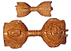
Kpoko kpoko: Двухсторонние деревянные трещотки, происходящие из племени Ebo юга центральной Нигерии. Инструмент производитт неповторимый хрустящий древесный звук.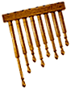
Кугиклы (Кувиклы): Старинный русский духовой инструмент, разновидность флейты Пана. Состоит из нескольких закрытых с одного конца отдельных трубочек, иногда склеенных между собой смолой или связанных. Изготавливается из куги, бузины, дягиля и схожих пород.Звук извлекают вдуванием воздуха внутрь трубочек. Играют на кугиклах обычно в ансамбле, сопровождая исполнение отдельными возгласами.